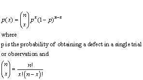
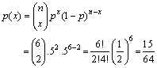
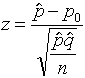
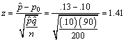

|
7.
Product and Process Comparisons
7.2. Comparisons based on data vrom one process
|
|||
| Testing proportions is based on the binomial distribution | The proportion defective produced
by a process is usually monitored using statistics based on the binomial
distribution.
The Binomial Distribution The observed number of defective, x, when a random sample of size n is selected from a continuous manufacturing process (or a large population or lot), is a random variable that follows the binomial distribution.  |
||
| Binomial example | Let us do an example:
Consider tossing a coin and betting on "tails". Equating getting a "head" with "defective", we might ask what is the probability of getting exactly 2 heads in six tosses of a coin? With n = 6, x = 2, p = 1/2, we get  What is the probability of get 2 heads or less? This is the probability of 0 heads, or 1 head, or 2 heads, which is p(0) + p(1) + p(2) = 1/64 + 6/64 + 15/64 = 22/64 or 11/32. The formulas for the mean and variance of the binomial distribution are np and np(1-p) respectively. Usually one writes q instead of 1-p. So for n = 6 and p = .5 the mean = 3 and the variance = 1.5 For large samples (n > 30) the normal distribution is used to approximate the binomial distribution. |
||
| How to test proportions | Testing the Proportion Defective
To test if the fraction defectives has changed from a nominal or long established value, we test the null hypothesis: Ho: p = po, the nominal value vs
The test statistic is  |
||
| Example of testing proportions | Example
A new way of processing wafers was introduced. Of 200 tested wafers, 26 show some type of defect. That is a proportion of 0.13. Since the old method had demonstrated a 0.10 proportion of defectives over a long period of time, management questioned the reliability of the new method. To validate the ineffectiveness of the new way, the following hypothesis was tested: Ho: p = po, the new process has the same defect level as the old process vs.As stated above, this is a one-tail test since we are most concerned about protecting against a switch to a less reliable process. Choosing a = 0.05, we will reject the null, when the test statistic z is greater than the critical value 1.645. Substituting the numerical values into the test statistic, we get  Since the test statistic (1.41) is less than the critical value (1.645) we cannot reject the null hypothesis of equality and conclude that the new way of processing produces more defectives. The new process may, indeed, be worse - but we need more evidence before we can make that conclusion at the 95% confidence level. |
||